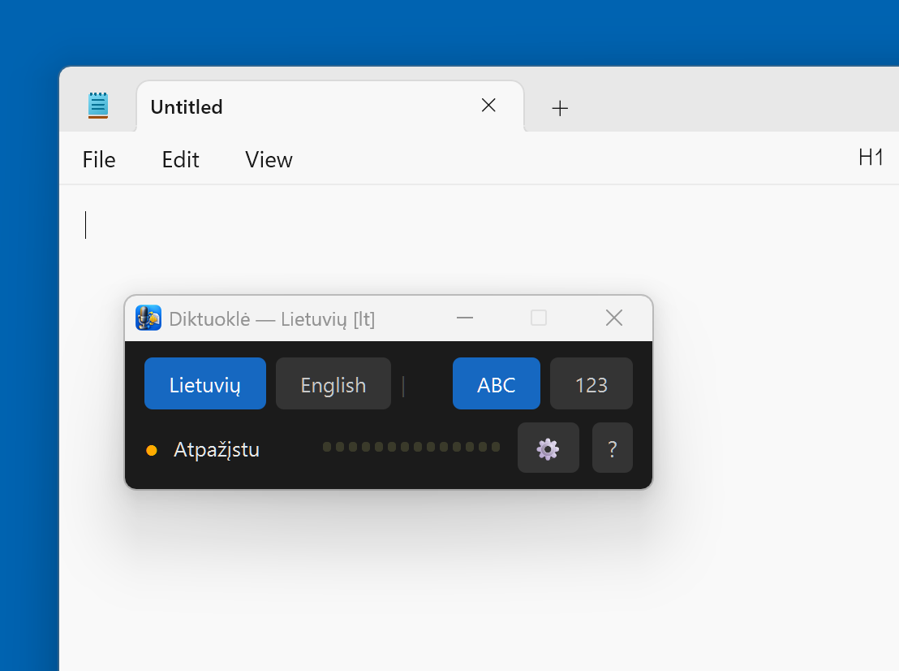
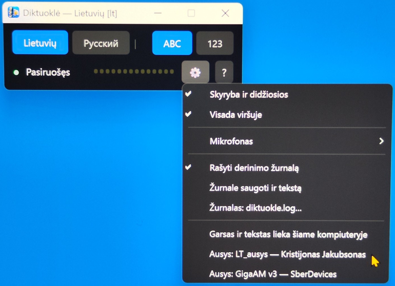
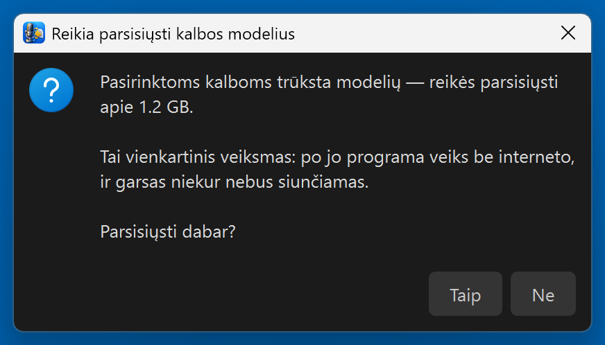
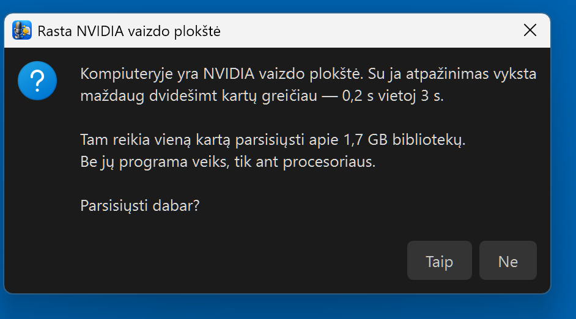
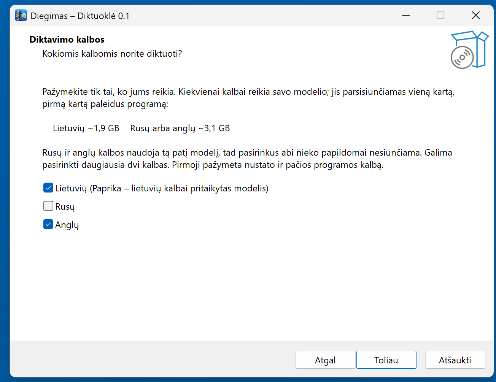

Offline-Diktat für Windows — Litauisch, Russisch, Englisch.
Strg halten, sprechen — der Text erscheint. Auf dem eigenen Rechner, kostenlos.
Ausführliche Anleitung (Englisch): README_EN.md
Vorab ehrlich: Deutsch erkennt Diktuoklė nicht. Diktiert wird auf Litauisch, Russisch oder Englisch, und auch die Programmoberfläche gibt es nur in diesen drei Sprachen. Diese Seite ist für alle, die mit Litauisch zu tun haben — Familie, Arbeit, Studium — oder ein lokales Diktierwerkzeug ohne Cloud suchen.
Word, Browser, Chat, Buchhaltung — der Text landet dort, wo der Cursor blinkt. Rechte Strg-Taste halten und sprechen, loslassen — geschrieben.
Die Spracherkennung läuft auf Ihrem Rechner. Ton und Text verlassen ihn nie. Kein Konto, kein Abo, kein Schimpfwortfilter.
Seit 0.2 erkennt LT_ausys das Litauische — das Modell „kmynas“ von Kristijonas Jakubsonas, trainiert mit ~3.087 Stunden litauischer Sprache. Befehle des Autors: 17,9 % Wortfehler (das frühere Paprika: 22,8 %); langes Diktat: 10,2 % (Paprika: 32,4 %).
Kommas und Großbuchstaben setzt das Modell selbst. Im Modus „123“ werden gesprochene Zahlen zu Ziffern, auch gebeugte litauische Formen: „penkių lentų po aštuoniolika milimetrų“ → „5 lentų po 18 milimetrų“.
Bei der Installation bis zu zwei Sprachen wählen. Mit gehaltener Strg-Taste → drücken und in der anderen Sprache weitersprechen, ohne den Finger zu heben.
Litauisch und Russisch laufen auf dem Prozessor: ein Befehl in etwa 0,05 s, eine Minute Diktat in wenigen Sekunden. Eine Grafikkarte beschleunigt nur Englisch.




Der Installer ist klein (~90 MB). Die Modelle werden beim ersten Start heruntergeladen, nur für die gewählten Sprachen:
| Gewählt | Download |
|---|---|
| nur Litauisch | ~1 GB |
| nur Russisch | ~0,23 GB |
| nur Englisch | ~3,1 GB |
| Litauisch + Russisch | ~1,2 GB |
| Litauisch + Englisch | ~4,1 GB |
Das Programm fragt vor dem Download. In der Statuszeile steht eine bis zehn Minuten lang „Downloading…“, dann „Loading…“, dann „Ready“ (bzw. auf Litauisch oder Russisch). Das passiert nur einmal — danach ist kein Internet mehr nötig. Mit winget so installieren: winget install RobertasTa.Diktuokle --interactive — sonst wird die Sprachauswahl übersprungen.
Windows zeigt ein blaues Fenster „Der Computer wurde durch Windows geschützt“. Das Programm hat kein kostenpflichtiges Code-Signing-Zertifikat — es ist kein Virus. „Weitere Informationen“ → „Trotzdem ausführen“ klicken. Die sha256-Prüfsumme steht auf der Release-Seite neben der Datei.
Das Herz dieses Programms ist nicht unseres. Litauische Sprache erkennt LT_ausys — das Modell kmynas v4 von Kristijonas Jakubsonas (NVIDIA Parakeet, mit dem litauischen Korpus LIEPA-3 nachtrainiert), das wir nach ONNX übertragen haben, damit es auf dem Prozessor läuft. Russisch erkennt GigaAM v3 (SberDevices), Englisch Whisper large-v3 (OpenAI). Kristijonas hat seine Arbeit offen veröffentlicht — nur deshalb konnte dieses Programm entstehen. Wir haben das Fenster, die Tasten, die Zahlenumwandlung und den Installer darum gebaut.
Bis 0.2 erledigte das sein Paprika. Verglichen auf demselben Rechner mit denselben Aufnahmen: Befehle des Autors — LT_ausys 17,9 % Wortfehler, Paprika 22,8 %; langes Diktat — 10,2 % und 32,4 %; ein Befehl auf dem Prozessor — 0,05 s und 3 s. Russisch mit GigaAM: 0,11 s pro Satz auf dem Prozessor statt 7,2 s. Alle Tabellen und Messmethode (auf Litauisch).
Ton und Text verlassen den Rechner nie. Internet braucht man zweimal: um das Programm herunterzuladen und beim ersten Start für die Modelle. Danach kann man das Kabel ziehen. Ein Protokoll schreibt das Programm nur, wenn Sie es selbst einschalten — denn darin stünde der diktierte Text selbst, und das sind Ihre Briefe, nicht unsere Sache.
Kein Programmierer? Im Programm auf „?“ → „No answer here? Ask an AI“ klicken (in der englischen Oberfläche) — es öffnet sich ein Chat mit einem Assistenten, der die Anleitung des Autors zu diesem Programm schon kennt: was zu fragen ist, was nicht behauptet werden darf, wie jeder Fehler aussieht. Fragen Sie mit eigenen Worten, auch auf Deutsch.
Oder in einen beliebigen KI-Chat einfügen: Lies https://raw.githubusercontent.com/RobertasTa/diktuokle/main/AI_CONSULTANT_BRIEF.md und hilf mir mit Diktuokle.
Kristijonas Jakubsonas — für die Ohren (erst Paprika, jetzt kmynas) und dafür, dass er sie offen veröffentlicht hat. Es ist seine Arbeit, nicht unsere.
Der Universität Vilnius und dem LIEPA-3-Team — für den Korpus. SberDevices für GigaAM, istupakov für onnx-asr, NVIDIA für Parakeet, SYSTRAN für faster-whisper, OpenAI für Whisper, jrsoftware für Inno Setup — das kein Litauisch hatte, also haben wir es selbst geschrieben.
Diktuoklė sind die Ohren; Reginutė ist der Mund. Zusammen ergeben sie einen Computer, der ohne Internet Litauisch spricht.